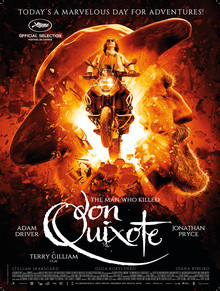

The Man Who Killed Don Quixote

Terry Gilliam
2018
133 minutes
Wikipedia link
IMDB link
TV Tropes link
This is text.
Time to choose something different:
- Enough of Spain. Let's check in on Kenya and Tanzania! - Turn to section 91
- Cervantes is cool, but I'm a bigger fan of Lewis Carroll. Let's go down the rabbit hole...and maybe to a haunted house! - Turn to section 177
- Okay, here's a niche request. Got any movies where I can watch two guys move a bunch of rocks around? - Turn to section 236